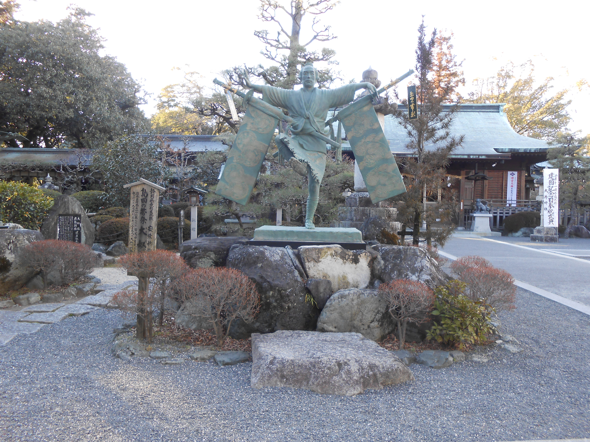
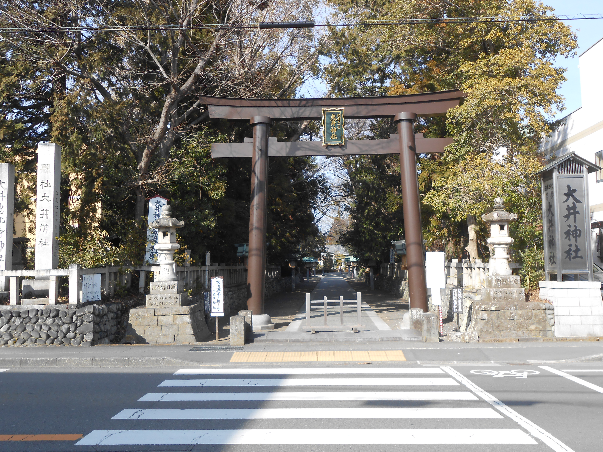
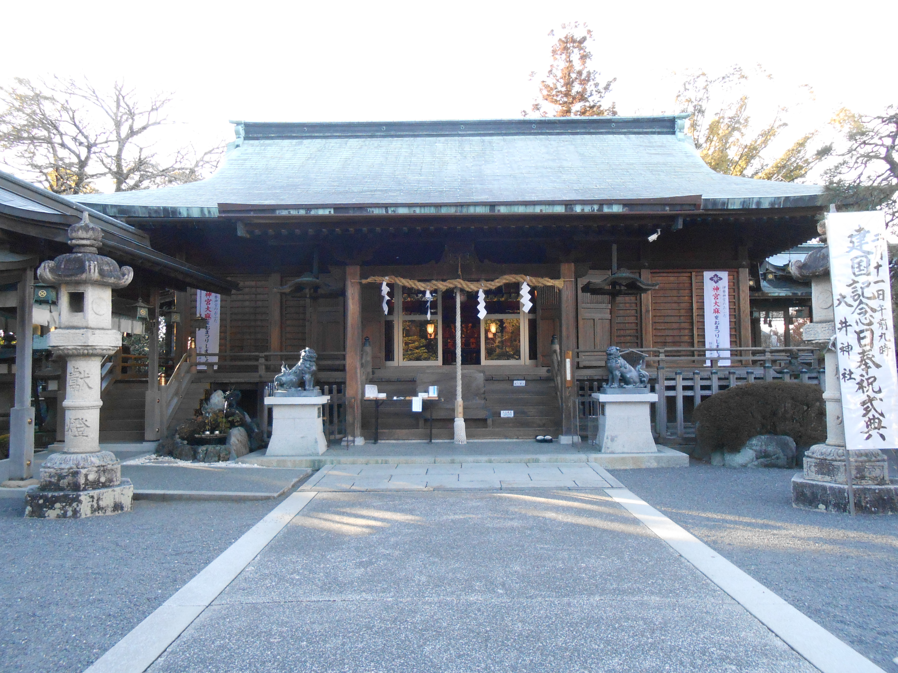

発見！こんな歴史があった島田市

三大奇祭と呼ばれる島田大祭って？
島田大祭は3年に一度10月中旬に行われる東海の三大奇祭の一つであり、大名行列、大奴、鹿島踊り、屋台での踊りや地踊りなど様々な踊りが行われます。その歴史はとても古く、元禄8年、1695年から始まっています。そして島田大祭は、島田宿とも関係があります。
その昔、島田に嫁いで来たお嫁さんは安産祈願のために大井神社に訪れたそうです。そしてその帰りには島田宿に帯を見せて帰る、という流れがあったそうですが、だんだんとその行為をお嫁さんは恥ずかしいと思うようになりました。そこで代わりに奴が丸帯を下げて歩いた、というのが島田大祭、又の名を帯祭りという祭りの主役である大奴の始まりと言われています。祭り自体の原型を明らかにすることは時代とともに変化しているため明らかにすることは難しいと言われていますが、このように端々に島田市との関連があったことは伺えます。

また、大祭中に行われる様々な踊りに合わせた三絃や長唄なども合わせて、大衆芸能が島田に発展したきっかけであるとも言われています。[3]
このように、島田大祭は島田市民にとって大切なお祭りであると言えるものであり、これからも引き継いでいくものであると言えます。一番最近では、平成28年の10月に行われました。次回は平成31年です。この伝統のお祭りをぜひ一度ご覧になってはいかがでしょうか。


参考文献
- [3]島田市役所（昭和43年）島田市史 中巻.